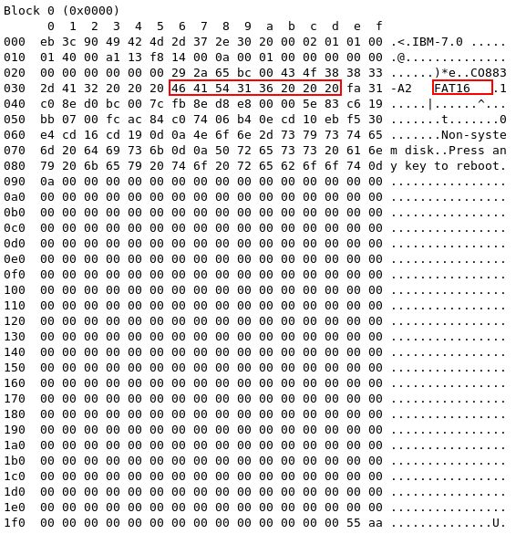
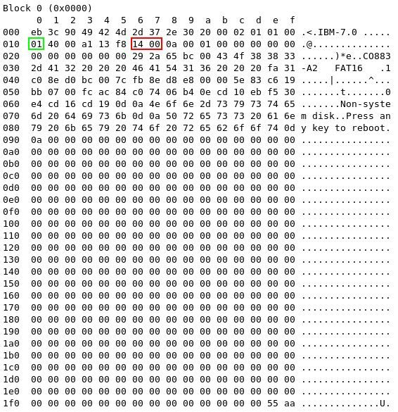
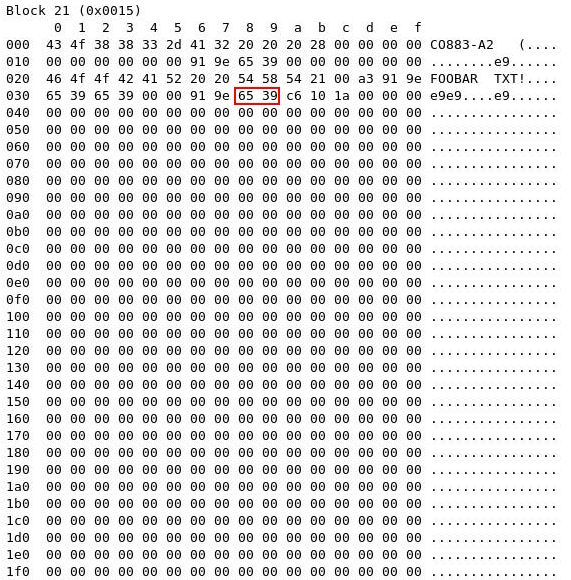
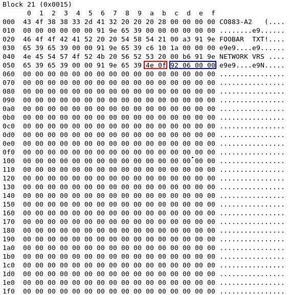
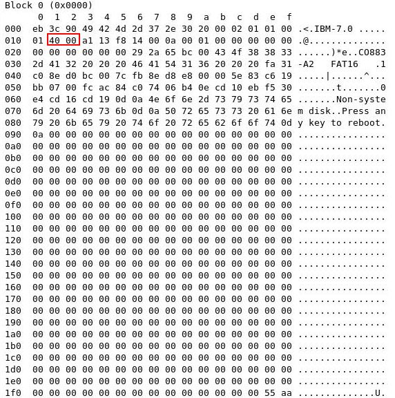
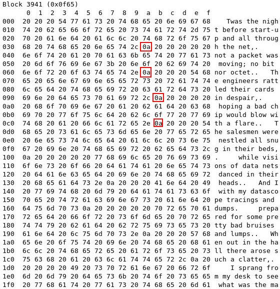
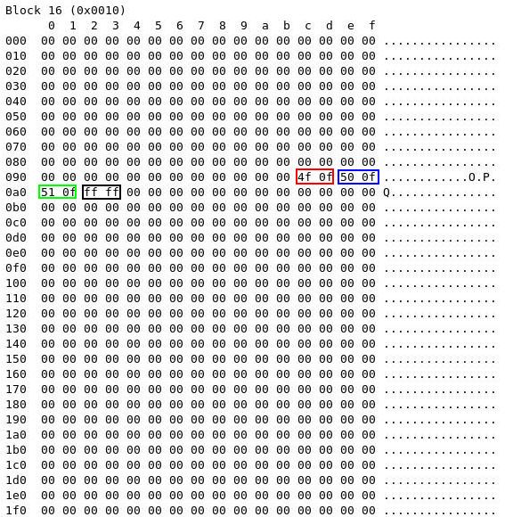
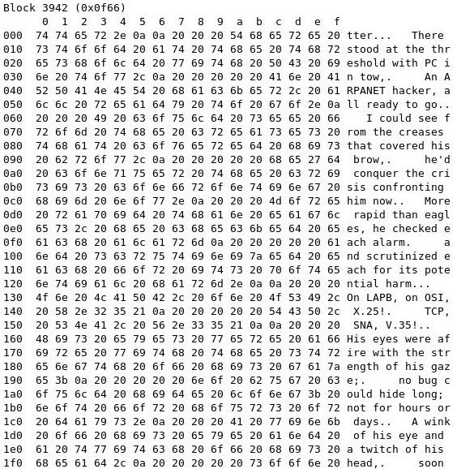
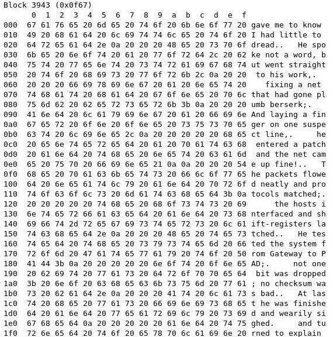
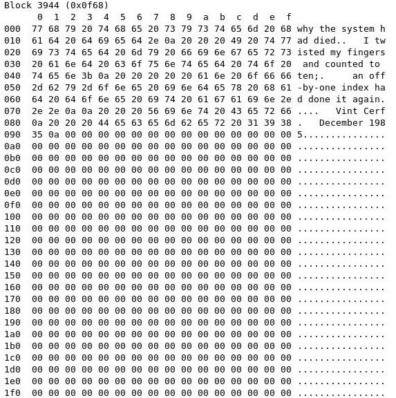

| Phobos | A tutorial on the FAT file system |
This page is intended to provide an introduction to the original File Allocation Table (FAT) file system. This file system was used on all versions of MS-DOS and PC-DOS, and on early versions of Windows; it is still used on floppy disks formatted by Windows and some other systems. Modified versions are also still supported by Windows on hard disks, if required.
The FAT file system is heavily based on the file map model in terms of its on-disk layout; that model was around for many years before Microsoft inherited the initial FAT file system from the original writers of DOS (Seattle Computer Products). It is a reasonably simple, reasonably robust file system.
There are three basic variants of the FAT file system, which differ mainly in the construction of the actual file allocation table. Floppy disks and small hard disks usually use the 12-bit version, which was superseded by the 16-bit version as hard disks became bigger. This in turn was superseded by the 32-bit version as disks became bigger still. We shall concentrate on the 16-bit version, since the 12-bit version can be tricky for beginners, and the 32-bit version is more complex than needed for this tutorial.
Any disk is made up of surfaces (one for each head), tracks and sectors. However, for simplicity, we can consider a disk as a simple storage area made up just of a number of sectors. Further, these sectors are considered to be numbered consecutively, the first being numbered 0, the second numbered 1, etc.; we will not worry about the physical location of any sector on the actual disk. Because we want to emphasise that the location of a sector is irrelevant to the actual disk structure, and because sectors have their own numbers within each track, we shall call these sectors blocks from now on; as previously stated, they form a linear, densely numbered list.
All blocks are the same size, 512 bytes, on practically all FAT file systems. Howewer, large disks can have too many blocks for comfort, so blocks are sometimes grouped together in pairs (or fours, or eights, etc...); each such grouping is called an allocation unit. The FAT file system actually works in allocation units, not blocks, but for simplicity we shall assume in the description below that each allocation unit contains exactly one block, which means that we can use the terms interchangeably.
Hexadecimal numbers are indicated using the convention commonly used in C; that is, a leading 0x. The decimal number 17 would thus be written as 0x11 in hexadecimal notation here.
Values in the FAT file system are either stored in bytes (8 bit values, 0-255 unsigned) or in words (pairs of bytes, 16 bit values, 0-65535 unsigned). Note that the first byte of a pair is the least significant byte, and the second byte of a pair is the most significant byte. For example, if the byte at position 3 has a value of 0x15, and the byte at position 4 has a value of 0x74, they together make up a word with value 0x7415 (not 0x1574).
There are occasional 32-bit values (doublewords), and these use a similar approach (in this case 4 bytes, with least significant byte stored first).
Lastly, note that individual bits within a byte or word are numbered from the least significant end (right hand end), starting with bit 0.
This section describes the on-disk structure of a FAT file system; that is, how the various areas of the disk are laid out, and what is stored in them.
All disks using the FAT file system are divided into several areas. The following table summarises the areas in the order that they appear on the disk, starting at block 0:
| Area description | Area size |
|---|---|
| Boot block | 1 block |
| File Allocation Table (may be multiple copies) | Depends on file system size |
| Disk root directory | Variable (selected when disk is formatted) |
| File data area | The rest of the disk |
The boot block occupies just the first block of the disk. It holds a special program (the bootstrap program) which is used for loading the operating system into memory. It would thus appear to be fairly irrelevant to this discussion.
However, in the FAT file system it also contains several important data areas which help to describe the rest of the file system. Thus, to understand how a particular disk is laid out, it is necessary first to understand at least part of the contents of the boot block. The relevant areas are shown in the following table, together with their byte offsets from the start of the boot block. We will see, later, which of these are actually important to us.
| Offset from start | Length | Description |
|---|---|---|
| 0x00 | 3 bytes | Part of the bootstrap program. |
| 0x03 | 8 bytes | Optional manufacturer description. |
| 0x0b | 2 bytes | Number of bytes per block (almost always 512). |
| 0x0d | 1 byte | Number of blocks per allocation unit. |
| 0x0e | 2 bytes | Number of reserved blocks. This is the number of blocks on the disk that are not actually part of the file system; in most cases this is exactly 1, being the allowance for the boot block. |
| 0x10 | 1 byte | Number of File Allocation Tables. |
| 0x11 | 2 bytes | Number of root directory entries (including unused ones). |
| 0x13 | 2 bytes | Total number of blocks in the entire disk. If the disk size is larger than 65535 blocks (and thus will not fit in these two bytes), this value is set to zero, and the true size is stored at offset 0x20. |
| 0x15 | 1 byte | Media Descriptor. This is rarely used, but still exists. . |
| 0x16 | 2 bytes | The number of blocks occupied by one copy of the File Allocation Table. |
| 0x18 | 2 bytes | The number of blocks per track. This information is present primarily for the use of the bootstrap program, and need not concern us further here. |
| 0x1a | 2 bytes | The number of heads (disk surfaces). This information is present primarily for the use of the bootstrap program, and need not concern us further here. |
| 0x1c | 4 bytes | The number of hidden blocks. The use of this is largely historical, and it is nearly always set to 0; thus it can be ignored. |
| 0x20 | 4 bytes | Total number of blocks in the entire disk (see also offset 0x13). |
| 0x24 | 2 bytes | Physical drive number. This information is present primarily for the use of the bootstrap program, and need not concern us further here. |
| 0x26 | 1 byte | Extended Boot Record Signature This information is present primarily for the use of the bootstrap program, and need not concern us further here. |
| 0x27 | 4 bytes | Volume Serial Number. Unique number used for identification of a particular disk. |
| 0x2b | 11 bytes | Volume Label. This is a string of characters for human-readable identification of the disk (padded with spaces if shorter); it is selected when the disk is formatted. |
| 0x36 | 8 bytes | File system identifier (padded at the end with spaces if shorter). |
| 0x3e | 0x1c0 bytes | The remainder of the bootstrap program. |
| 0x1fe | 2 bytes | Boot block 'signature' (0x55 followed by 0xaa). |
Historically, the size and type of disk were difficult for the operating system to determine by hardware interrogation alone. A 'magic byte' was thus used to classify disks. This are still present, but rarely used, and its contents are known as the Media Descriptor. Generally, for hard disks, this is set to 0xf0.
The FAT occupies one or more blocks immediately following the boot block. Commonly, part of its last block will remain unused, since it is unlikely that the required number of entries will exactly fill a complete number of blocks. If there is a second FAT, this immediately follows the first (but starting in a new block). This is repeated for any further FATs.
Note that multiple FATs are used particularly on floppy disks, because of the higher likelihood of errors when reading the disk. If the FAT is unreadable, files cannot be accessed and another copy of the FAT must be used. On hard disks, there is often only one FAT.
In the case of the 16-bit FAT file system, each entry in the FAT is two bytes in length (i.e. 16 bits). The disk data area is divided into clusters, which are the same thing as allocation units, but numbered differently (instead of being numbered from the start of the disk, they are numbered from the start of the disk data area). So, the cluster number is the allocation unit number, minus a constant value which is the size of the areas in between the start of the disk and the start of the data area.
Well, almost. The clusters are numbered starting at 2, not 0! So the above calculation has to have 2 added to it to get the cluster number of a given allocation unit...and a cluster number is converted to an allocation unit number by subtracting 2...!
So, how does the FAT work? Simply, there is one entry in the FAT for every cluster (data area block) on the disk. Entry N relates to cluster N. Clusters 0 and 1 don't exist (because of the 'fiddle by 2' above), and those FAT entries are special. The first byte of the first entry is a copy of the media descriptor byte, and the second byte is set to 0xff. Both bytes in the second entry are set to 0xff.
What does a normal FAT entry for a cluster contain? It contains the successor cluster number - that is, the number of the cluster that follows this one in the file to which the current cluster belongs. The last cluster of a file has the value 0xffff in its FAT entry to indicate that there are no more clusters.
The root directory contains an entry for each file whose name appears at the root (the top level) of the file system. Other directories can appear within the root directory; they are called subdirectories. The main difference between the two is that space for the root directory is allocated statically, when the disk is formatted; there is thus a finite upper limit on the number of files that can appear in the root directory.
Subdirectories are just files with special data in them, so they can be as large or small as desired.
The format of all directories is the same. Each entry is 32 bytes (0x20) in size, so a single block can contain 16 of them. The following table shows a summary of a single directory entry; note that the offset is merely from the start of that particular entry, not from the start of the block.
| Offset | Length | Description |
|---|---|---|
| 0x00 | 8 bytes | Filename |
| 0x08 | 3 bytes | Filename extension |
| 0x0b | 1 byte | File attributes |
| 0x0c | 10 bytes | Reserved |
| 0x16 | 2 bytes | Time created or last updated |
| 0x18 | 2 bytes | Date created or last updated |
| 0x1a | 2 bytes | Starting cluster number for file |
| 0x1c | 4 bytes | File size in bytes |
The eight bytes from offset 0x00 to 0x07 represent the filename. The first byte of the filename indicates its status. Usually, it contains a normal filename character (e.g. 'A'), but there are some special values:
If a filename is fewer than eight characters in length, it is padded with space characters.
The three bytes from offset 0x08 to 0x0a indicate the filename extension. There are no special characters. Note that the dot used to separate the filename and the filename extension is implied, and is not actually stored anywhere; it is just used when referring to the file. If the filename extension is fewer than three characters in length, it is padded with space characters.
The single byte at offset 0x0b contains flags that provide information about the file and its permissions, etc. The flags are single bits, and have meanings as follows. Each bit is given as its numerical value, and these are combined to give the actual attribute value:
The two bytes at offsets 0x16 and 0x17 are treated as a 16 bit value; remember that the least significant byte is at offset 0x16. They contain the time when the file was created or last updated. The time is mapped in the bits as follows; the first line indicates the byte's offset, the second line indicates (in decimal) individual bit numbers in the 16 bit value, and the third line indicates what is stored in each bit.
<------- 0x17 --------> <------- 0x16 --------> 15 14 13 12 11 10 09 08 07 06 05 04 03 02 01 00 h h h h h m m m m m m x x x x x
where:
The two bytes at offsets 0x18 and 0x19 are treated as a 16 bit value; remember that the least significant byte is at offset 0x18. They contain the date when the file was created or last updated. The date is mapped in the bits as follows; the first line indicates the byte's offset, the second line indicates (in decimal) individual bit numbers in the 16 bit value, and the third line indicates what is stored in each bit.
<------- 0x19 --------> <------- 0x18 --------> 15 14 13 12 11 10 09 08 07 06 05 04 03 02 01 00 y y y y y y y m m m m d d d d d
where:
The two bytes at offsets 0x1a and 0x1b are treated as a 16 bit value; remember that the least significant byte is at offset 0x1a. The first cluster for data space on the disk is always numbered as 0x0002. This strange arrangement is because the first two entries in the FAT are reserved for other purposes.
The four bytes at offsets 0x1c to 0x1f are treated as a 32 bit value; remember that the least significant byte is at offset 0x1c. They hold the actual file size, in bytes.
The best way to understand how to use the above information is to work though some simple examples.
We assume that there is a tool available to display the contents of a block in both hexadecimal and as ASCII characters. Most such tools will display unusual ASCII characters (e.g. carriage return) as a dot. For example, here is a display of a typical boot block:

As an illustration, one field in the boot block has been highlighted in red (the highlight appears twice, once for the hexadecimal representation and once for the ASCII representation). The numbers down the left hand side are the offsets (from the start of the block) of the first byte on that row, and the first row of digits along the top are the offset of each byte within the row. We can thus easily see that the highlighted area starts at offset 0x36.
The area in question is (look back at the boot block layout) the file system type, in this case FAT16. To save us looking up each byte in a table of ASCII characters, we can simply consult the equivalent representation on the right hand side. 0x46 represents F, 0x41 represents A, and so on.
To find the root directory, we need to examine the file system data in the boot block. So, let's look again at the boot block of our example disk:

We know that the root directory appears immediately after the last copy of the FAT. So what we need to find out is the size of the FAT, and how many copies there are. We also need to know the size of anything else that appears before the FAT(s); there is just the single block of the boot block. So, the number of blocks that appear before the root directory is given by:
(size of FAT)*(number of FATs) + 1
All we need to do, then, is discover these values. First, we know that the number of FATs is stored at offset 0x10 (highlighted in green above); this tells us that there is just one FAT. Next, we need to know the size of a FAT; this is at offsets 0x16 and 0x17, where we find 0x14 and 0x00 respectively (highlighted in red above). Remember that these two bytes together make up a 16 bit value, with the least significant byte stored first; in other words, the value is 0x0014 (in decimal, 20). So, the total number of blocks that precede the root directory is given by:
0x0014*1 + 1 => 0x0015 (decimal 21)
We should thus find the root directory in block 0x15, so let's look at it...
It seems to have something occupying the first 0x20 bytes, and it's...a directory entry! We won't go into detail here, but detailed examination of those bytes would show that it's the special entry for the disk label. There don't appear to be any more entries in this directory.
In this example, the file FOOBAR.TXT has been created on the same disk, and it appears in the root directory. We wish to find out which attribute flags are set on the file.
First, we need to find the root directory; we have already done this in example 1. Let's take a look at it after FOOBAR.TXT has been created:

We can see fairly easily that the second directory entry (the one at offset 0x20) is that for FOOBAR.TXT. Remember that the dot between the filename and the filename extension is not actually stored, but is implied. We see the filename (highlighted in red) and the filename extension (highlighted in blue). We know that the attribute byte appears at offset 0x0b, and it is highlighted in green here.
The value of the attribute byte is 0x21. We can express this in binary as:
0 0 1 0 0 0 0 1
Taking each of the bits separately, and making a hexadecimal number out of them, we get:
0 0 1 0 0 0 0 0 => 0x20
0 0 0 0 0 0 0 1 => 0x01
Our table of attribute values shows that 0x20 means that the 'archive flag' is set, and 0x01 indicates that the file is read-only.
Here, we want the date attached to a particular file (only one date is kept, which is the date of creation or last modification). The file in question is FOOBAR.TXT again.
Let's look once more at the root directory; we have already done this in example 2, and indeed we already know that FOOBAR.TXT has a directory entry at offset 0x20:

This time we are interested in the file date, and we know from our root directory layout that this is at offset 0x18 within each directory entry. Thus, the date for FOOBAR.TXT is at offset 0x20+0x18, or 0x38 (highlighted in red above). Once again, this is a 16 bit value with the least significant byte stored first. The bytes are 0x65 and 0x39 respectively, so reversing these and putting them together gives a value of 0x3965.
Now all we have to do is analyse the components of this value. An easy way is first to convert it to binary, and this is even easier if we take it one hexadecimal digit at a time:
3 9 6 5
| | | |
V V V V
0 0 1 1 1 0 0 1 0 1 1 0 0 1 0 1
Let's push all the digits together:
0 0 1 1 1 0 0 1 0 1 1 0 0 1 0 1
Now we can split them again on boundaries corresponding to the individual components of the date, as defined in the file date format. Then we convert each part back to decimal:
0 0 1 1 1 0 0 1 0 1 1 0 0 1 0 1
| | |
V V V
28 11 5
(year) (month) (day)
Remember that the year is based at 1980, so if we add 1980 to 28, we get 2008. The entire date is thus the 5th of November 2008.
Here, we wish to find out the numbers of the blocks containing data for a particular file which has now been added to the disk. The name of the file is NETWORK.VRS.
Once again, we find the root directory. Here are its latest contents, after NETWORK.VRS has been created:

Note that the third directory entry (starting at offset 0x40) is that for NETWORK.VRS. We know that the starting cluster number for the file data occupies bytes at offsets 0x1a and 0x1b in a particular directory entry; thus the bytes we want are at offsets 0x5a and 0x5b (we just added 0x40, the offset of the start of the entry). These (highlighted in red) contain 0x4e and 0x0f respectively, and, remembering that the first byte is the least significant one, the number we want is 0x0f4e. Incidentally, the next four bytes (highlighted in blue) are the file size, again with the least significant byte first. These are 0x92, 0x06, 0x00, 0x00 respectively, making a value of 0x00000692. This (in decimal) is 1682. So, this file is 1682 bytes long.
Let's review what we know so far...
What else do we need to know? We know where the root directory starts, but not where it ends. So we need the size of the root directory, in blocks. Let's look once again at the boot block:

What we need to find this time is the maximum number of entries in the root directory; this is fixed when the disk is formatted. We know from the boot block layout that this appears in the two bytes starting at offset 0x11 in the boot block (these are highlighted in red above). These bytes contain 0x40 and 0x00 respectively, so (arranging as usual) this gives us a value of 0x0040 (64 in decimal). So there are 64 root directory entries. We know that one directory entry occupies 32 bytes, so the total space occupied by the root directory is 64*32 bytes, or 2048 bytes. Each block is 512 bytes, so the number of blocks occupied by the root directory is 2048 divided by 512...that is, 4.
So, the root directory starts at block 0x15. Thus the first allocation unit starts at 0x15+4, or 0x19. So, to convert an allocation unit number to a block number, we need to add the constant value 0x19. And to convert a cluster number (which is what appears in the root directory) to a block number, we need to add 0x17, to allow for that strange offset of 2.
We now know that the first data block of the file is at cluster number 0xf4e (see above). Adding the constant we have discovered, we find that this is block number 0xf4e+0x17, or 0xf65. Let's look at block 0xf65:

Well, that certainly looks like the start of a poem! Each line of the text is separated by a special character called newline, which has the code 0x0a (decimal 10). The first few of these are highlighted in red.
We have nearly finished. There is obviously more of this file, and for us to find the rest of it, we need to consult the FAT. Recall that the starting cluster number of the file (the block we just looked at) is 0xf4e. Each entry in the FAT is two bytes in size, so we'll find the entry for that cluster at offset 0xf4e*2 in the FAT, which is offset 0x1e9c (it's easier to add the value twice than attempt multiplication). We know that one disk block (and thus one block of the FAT) is 0x200 bytes in size, so we just need to divide 0x1e9c by 0x200. This sounds hard, but it isn't. You can find tools for this, or do it yourself. Let's look at these two numbers in binary:
0x0200 => 0 0 0 0 0 0 1 0 0 0 0 0 0 0 0 0
0x1e9c => 0 0 0 1 1 1 1 0 1 0 0 1 1 1 0 0
The first number is a power of two, so to divide by it we simply shift the second number right - in this case by nine places:
0 0 0 0 0 0 0 0 0 0 0 0 1 1 1 1 => 0x0f
So the entry we want is in block 0x0f of the FAT. The remainder from our division is of course all the bits we lost when we shifted:
0 1 0 0 1 1 1 0 0 => 0x9c
so this is the byte offset of the entry within the FAT block.
We need to find FAT block 0x0f. We know the FAT starts in block 1 of the disk (see earlier), so block 0x0f of the FAT will be in disk block 0x0f+1, or block 0x10. Let's look at that block:

We need to look at the FAT entry (two bytes) at offset 0x9c; this is highlighted in red above, and resolves to the 16 bit value 0x0f4f. This is actually the very next cluster, numerically, from the one we have just looked at (this will not always be the case), so we can apply a bit of common sense and deduce that the second data block of the file appears immediately after the first; thus, the first two blocks are at 0xf65 and 0xf66. Here is block 0xf66:

which certainly looks like the continuation of the poem. If we look at the FAT entry for this new cluster (which, since it's the next block, will also be the next cluster and thus in the next FAT entry), it is highlighted in blue above, and contains the value 0x0f50. This is the very next block and cluster:

We continue this (again, it's the next block and cluster) and we find 0x0f51 as the cluster number (highlighted in green above). Here is that block:

Lastly, we look at the FAT entry for this block/cluster (highlighted in black). This time the entry is 0xffff, which indicates that there are no more blocks in the file. We have finished!
If you've managed to get this far (and understood it all) you have a good working understanding of the 16-bit FAT file system. You should be able to analyse a disk, and see if it is corrupted. You may even be able to repair it!

This site is copyright
© 2017
Bob Eager
Last updated:
27 Nov 2017